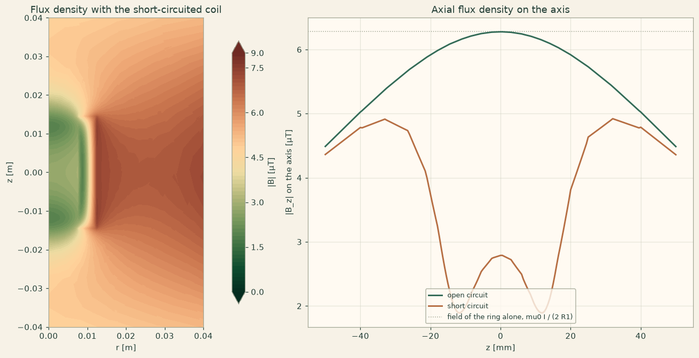
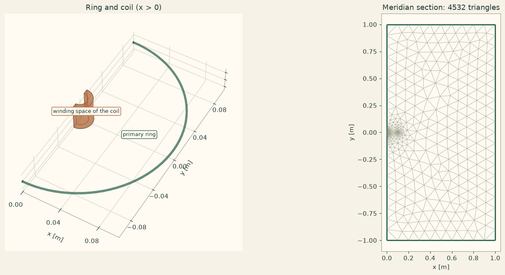

Docs › Examples › Mutual inductance of a ring and a homogenized 20-turn coil
Eddy currents · 2D-axisymmetric
Mutual inductance of a ring and a homogenized 20-turn coil
A coil of 20 turns sits at the centre of a single-turn copper ring of 100 mm radius; the coil is a homogenized winding. Mutual inductance, coil impedance and the current induced in the short-circuited coil at 1 kHz.

What it computes
OneSimulation reads ring and winding space from STEP files, takes their meridian section and solves the 2D-axisymmetric time-harmonic eddy-current model with quadratic elements on the revolved space. The ring is a solid copper conductor; the coil is a stranded winding of 20 turns with the resistance of its wire, fed by a current or short-circuited through a voltage of zero. The script that builds the STEP files comes with the notebook.
What it checks
M = 40.00 nH from the open-circuit voltage lies 0.21 % below Maxwell's formula summed over the 20 turn positions (40.09 nH) and 1.3 % above the uniform-field limit. The coil has R2 = 6.897 mOhm, the resistance of its wire, and L2 = 3.397 µH; the short-circuited coil carries -10.66 - 3.45j mA, exactly the current of the two coupled loops.
Geometry
The notebook starts at the import of the CAD files homogenized_coil_mutual_inductance.step, homogenized_coil_mutual_inductance_coil.step, homogenized_coil_mutual_inductance_ring.step: STEP (AP242), readable by any CAD program, with the names of the faces that the boundary conditions use. Put them next to the notebook.

The geometry script
The script homogenized_coil_mutual_inductance_geometry.py builds the geometry with the CAD objects of OneSimulation and writes the files. Change a dimension there, run it, and run the notebook again.
"""Geometry of the OneSimulation example "Mutual inductance of a ring and a homogenized 20-turn coil".
Builds with the CAD objects of OneSimulation a cylinder of air of 1 m radius and 2 m height
around a single-turn copper ring of 100 mm radius (wire radius 1 mm) in the plane z = 0 and, at its
centre, the winding space of a 20-turn coil: two layers of ten turns of 1 mm wire radius, turn
centres at radii 8.5 mm and 11.5 mm and every 3 mm from z = -13.5 mm to 13.5 mm, held as one block
from r = 7.5 mm to 12.5 mm and z = -14.5 mm to 14.5 mm. Every part is cut to the side x > 0, so that
its section with the plane y = 0 is the meridian half-plane. Files:
homogenized_coil_mutual_inductance.step (air), homogenized_coil_mutual_inductance_ring.step and
homogenized_coil_mutual_inductance_coil.step.
"""
from onesim.cad.d3 import AnnularCylinder, Box, Cylinder, Torus
radius, height = 1.0, 2.0
side = Box(
length=radius, width=2 * radius, height=height, origin=(0.0, -radius, -height / 2)
)
(Cylinder(radius=radius, length=height, origin=(0.0, 0.0, -height / 2)) & side).save(
"homogenized_coil_mutual_inductance.step"
)
(Torus(major_radius=0.1, minor_radius=0.001) & side).save(
"homogenized_coil_mutual_inductance_ring.step"
)
(
AnnularCylinder(
inner_radius=0.0075,
outer_radius=0.0125,
length=0.029,
origin=(0.0, 0.0, -0.0145),
)
& side
).save("homogenized_coil_mutual_inductance_coil.step")The notebook
The complete notebook, cell by cell. Run it to produce the figures and the comparison printout.
A primary ring of radius \(R_1=100\) mm (copper wire of 1 mm radius) carries 1 A at 1 kHz. At its centre, coplanar and concentric, sits a secondary coil of \(N=20\) turns of the same wire: two layers of ten turns, turn centres at radii 8.5 mm and 11.5 mm and every 3 mm along the axis. A homogenized coil replaces the 20 wires by their winding space (7.5–12.5 mm in radius, 29 mm long) with the uniform current density \(N I_2/A\); its loop voltage is \(N\) times the mean loop voltage over the space, and its resistance is that of the 20 turns of wire in series, \(R_2=\sum_k 2\pi r_k/(\sigma\pi r_0^2)\). The meridian half-plane is solved for \(A_\varphi\):
| case | primary ring (solid copper) | secondary coil (homogenized) | |---|---|---| | open circuit | 1 A | no current: voltage \(V_2=j\omega M I_1\) | | coil alone | no current | 1 A: impedance \(Z_{22}=R_2+j\omega L_2\) | | short circuit | 1 A | voltage 0 |
| boundary | condition | |---|---| | outer boundary of the air cylinder (1 m radius, 2 m high) | \(A_\varphi=0\) | | axis \(r=0\) | symmetry |
The parts come from the CAD files homogenized_coil_mutual_inductance*.step; the script homogenized_coil_mutual_inductance_geometry.py builds them with the CAD objects of OneSimulation. Each part is cut to \(x>0\), and its section with the plane \(y=0\) is the meridian.
Reference. For \(R_1\gg R_2\) the primary field is uniform over the coil and \(M=N\pi\mu_0R_2^2/(2R_1)=39.478\) nH with \(R_2=10\) mm. More precisely, Maxwell's formula for coaxial filaments (Grover, Inductance Calculations, 1946), \(m(a,b,d)=\mu_0\sqrt{ab}\,[(2/k-k)K(k)-2E(k)/k]\) with \(k^2=4ab/((a+b)^2+d^2)\), summed over the 20 turn positions. The short-circuited coil carries \(I_2=-j\omega M I_1/Z_{22}\).
import numpy as np
from onesim.cad.exchange import load
from onesim.materials import VacuumPermeability, regionwise
from onesim.meshing import TriangularMesher
from onesim.numerics import Numerics
from onesim.numerics.fem import FiniteElement, Lagrange, RevolvedH1SpaceFactory
from onesim.numerics.linear import ComplexSparseDirect
from onesim.physics.magnetostatics import (
Coil,
EddyCurrents,
MagneticInsulation,
coil_current,
coil_impedance,
coil_voltage,
)
from onesim.simulation import Problem, Simulation
from onesim.visualization import plots, theme
from scipy.special import ellipe, ellipk
theme.set()Geometry and mesh
load returns each part, section its meridian. Ring and winding space are embedded regions with triangles of 0.25 mm; the air grows to 10 cm at the outer boundary.
name = "homogenized_coil_mutual_inductance"
meridian = lambda part: load(f"{name}{part}.step").section((0, 1, 0))
air, ring, winding = (
meridian(""),
meridian("_ring").named("ring"),
meridian("_coil").named("coil"),
)
axis = air.select(
edges=lambda edge: all(abs(point[0]) < 1e-12 for point in edge.points)
)
R1, wire, turns = 0.1, 0.001, 20
mesh = TriangularMesher(
target_size=0.1,
embedded_regions=(ring, winding),
region_sizes={"ring": 0.00025, "coil": 0.0005},
grading=0.25,
).generate(air)
fig = plots.figure(1, 2, size=(14, 6))
plots.geometry(
[
load(f"{name}_{part}.step").named(label)
for part, label in (
("ring", "primary ring"),
("coil", "winding space of the coil"),
)
],
camera=plots.Camera(elevation=50, azimuth=-60),
title="Ring and coil (x > 0)",
ax=fig[0],
)
plots.mesh(
mesh,
groups=("all",),
legend=False,
title=f"Meridian section: {mesh.cell_count} triangles",
ax=fig[1],
)
plots.show()Model
Coil(..., conductor="massive") is the solid copper ring; Coil(winding, turns=20, resistance=R2) the homogenized coil, fed by the current 0 (open), by 1 A (alone) or by the voltage 0 (short circuit).
frequency, sigma, mu0 = 1000.0, 5.8e7, float(VacuumPermeability().evaluate())
omega = 2 * np.pi * frequency
radii = np.repeat([0.0085, 0.0115], 10)
heights = np.tile(np.linspace(-0.0135, 0.0135, 10), 2)
resistance = np.sum(2 * np.pi * radii / (sigma * np.pi * wire**2))
numerics = Numerics(
spatial=FiniteElement(
element=Lagrange(order=2), quadrature_order=4, provider=RevolvedH1SpaceFactory()
),
linear_solver=ComplexSparseDirect(),
)
cases = {
"open circuit": (
Coil(ring, current=1.0, conductor="massive"),
Coil(winding, turns=turns, current=0.0, resistance=resistance),
),
"coil alone": (
Coil(ring, current=0.0, conductor="massive"),
Coil(winding, turns=turns, current=1.0, resistance=resistance),
),
"short circuit": (
Coil(ring, current=1.0, conductor="massive"),
Coil(winding, turns=turns, voltage=0.0, resistance=resistance),
),
}
solved = {}
for case, (primary, secondary) in cases.items():
model = EddyCurrents(
domain=air.domain(),
permeability=VacuumPermeability(),
frequency=frequency,
coils=(primary, secondary),
conductivity=regionwise({"ring": sigma}, default=0.0, unit="S/m"),
)
result = Simulation(
problem=Problem(
name=f"Ring and coil, {case}",
geometry=air,
physics=(model,),
boundary_conditions=(
MagneticInsulation(boundary=air.boundaries.all - axis, physics=model),
),
),
mesh=mesh,
numerics=numerics,
).solve_stationary()
solved[case] = (result, model, primary, secondary)Results
The mutual inductance from the open-circuit voltage against both references, the impedance of the coil, and the short-circuit current against the coupled-loop circuit.
result, model, primary, secondary = solved["open circuit"]
M = coil_voltage(result, model, secondary) / (
1j * omega * coil_current(result, model, primary)
)
filament = lambda a, b, d: (
lambda k: mu0
* np.sqrt(a * b)
* ((2 / k - k) * ellipk(k * k) - 2 / k * ellipe(k * k))
)(np.sqrt(4 * a * b / ((a + b) ** 2 + d**2)))
maxwell = np.sum(filament(R1, radii, heights))
uniform = turns * np.pi * mu0 * 0.01**2 / (2 * R1)
print(f"{mesh.cell_count} triangles")
print(f"M from the open-circuit voltage: {1e9 * M.real:.3f} {1e9 * M.imag:+.3f}j nH")
print(
f"Maxwell's formula over the 20 turns: {1e9 * maxwell:.3f} nH ({100 * (M.real / maxwell - 1):+.3f} %); "
f"uniform-field limit {1e9 * uniform:.3f} nH ({100 * (M.real / uniform - 1):+.2f} %)"
)
result, model, primary, secondary = solved["coil alone"]
Z22 = coil_impedance(result, model, secondary)
print(
f"coil: R2 = {1e3 * Z22.real:.3f} mOhm (20 turns of wire {1e3 * resistance:.3f} mOhm), L2 = {1e6 * Z22.imag / omega:.4f} µH"
)
result, model, primary, secondary = solved["short circuit"]
I2 = coil_current(result, model, secondary)
circuit = -1j * omega * M / Z22
print(
f"short circuit: I2 = {1e3 * I2.real:.3f} {1e3 * I2.imag:+.3f}j mA; circuit -j w M I1 / Z22 = "
f"{1e3 * circuit.real:.3f} {1e3 * circuit.imag:+.3f}j mA; deviation {100 * abs(I2 - circuit) / abs(circuit):.3f} %"
)Figure
The magnitude of the flux density with the short-circuited coil, near the centre, and the flux density on the axis with the coil open and short-circuited: the induced current pushes the field of the ring out of the coil.
z = np.linspace(-0.05, 0.05, 201)
line = np.column_stack((np.full_like(z, 1e-5), z))
fig = plots.figure(1, 2, size=(15, 6))
plots.surface(
solved["short circuit"][0].field(solved["short circuit"][1].magnetic_flux_density),
component=lambda B, position: 1e6 * np.hypot(np.abs(B[:, 0]), np.abs(B[:, 2])),
limits=(0, 8),
contours=9,
subdivisions=2,
xlimits=(0, 0.04),
ylimits=(-0.04, 0.04),
xlabel="r [m]",
ylabel="z [m]",
label="|B| [µT]",
title="Flux density with the short-circuited coil",
ax=fig[0],
)
plots.line(
x=1e3 * z,
y={
case: 1e6
* np.abs(
solved[case][0]
.field(solved[case][1].magnetic_flux_density)
.evaluate(line)[:, 2]
)
for case in ("open circuit", "short circuit")
},
hlines={"field of the ring alone, mu0 I / (2 R1)": 1e6 * mu0 / (2 * R1)},
xlabel="z [mm]",
ylabel="|B_z| on the axis [µT]",
title="Axial flux density on the axis",
legend="lower center",
ax=fig[1],
)
plots.show()Going further
Resolve the 20 turns as solid conductors in series and compare (proximity effect between the turns), or wind the coil with more turns in a longer space and watch \(M\) fall below the uniform-field limit as the coil reaches into the weaker field off the plane of the ring.